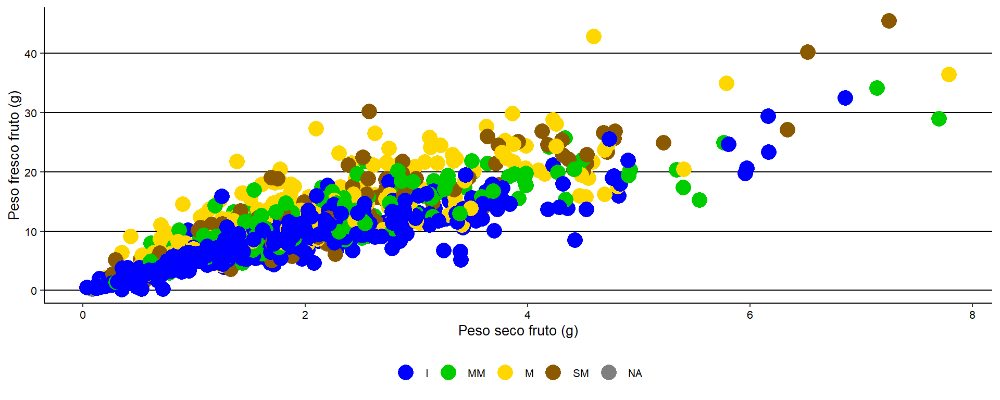

##
## Call:
## lm(formula = psf ~ pff, data = datospeso)
##
## Coefficients:
## (Intercept) pff
## 0.1749 0.1657##
## Call:
## lm(formula = psf ~ pff, data = datospeso)
##
## Residuals:
## Min 1Q Median 3Q Max
## -2.68401 -0.26222 -0.07354 0.22012 2.85114
##
## Coefficients:
## Estimate Std. Error t value Pr(>|t|)
## (Intercept) 0.17491 0.03283 5.328 1.19e-07 ***
## pff 0.16571 0.00281 58.983 < 2e-16 ***
## ---
## Signif. codes: 0 '***' 0.001 '**' 0.01 '*' 0.05 '.' 0.1 ' ' 1
##
## Residual standard error: 0.6162 on 1164 degrees of freedom
## Multiple R-squared: 0.7493, Adjusted R-squared: 0.7491
## F-statistic: 3479 on 1 and 1164 DF, p-value: < 2.2e-16#———-
## 1 2 3 4 5 6 7 8
## 0.41518383 0.54205166 1.10504647 0.58364759 1.20955476 0.75488511 0.69336510 0.46000654
## 9 10 11 12 13 14 15 16
## 0.16309070 0.38138250 1.46172371 0.65348648 0.95546373 0.57117398 1.36305221 0.62334085
## 17 18 19 20 21 22 23 24
## 1.11192134 0.95152214 1.57156426 0.78778129 0.97203860 1.10523804 0.93228805 0.99821241
## 25 26 27 28 29 30 31 32
## 0.54050163 0.99245979 0.55915917 0.72896045 0.95313400 0.99641185 1.05412609 0.93245638
## 33 34 35 36 37 38 39 40
## 1.37668814 1.02657708 1.27249616 1.37520296 0.97273939 0.84511771 0.37292400 0.31973607
## 41 42 43 44 45 46 47 48
## 0.37440918 0.23025411 0.16954747 0.12638449 0.78341802 0.50457590 0.30519078 0.17393819
## 49 50 51 52 53 54 55 56
## 0.14117146 0.13736569 0.11907944 0.50304335 0.54537091 0.50443570 0.36677829 0.38859183
## 57 58 59 60 61 62 63 64
## 0.26374408 0.12794313 0.29111728 0.16940348 0.25565866 0.45300166 0.66489592 0.62203345
## 65 66 67 68 69 70 71 72
## 1.47545373 0.88817707 0.91212312 0.68238712 0.96413367 1.77541204 1.84428716 0.57276000
## 73 74 75 76 77 78 79 80
## 0.82698761 0.92213425 0.29770982 0.30439312 0.17044865 0.67786985 0.47927626 0.03425297
## 81 82 83 84 85 86 87 88
## 1.24674188 0.17246733 1.26261471 0.48555576 0.08455776 1.51234850 1.66147216 1.02372501
## 89 90 91 92 93 94 95 96
## 0.35643812 0.05772443 0.43600269 0.56242845 0.16040939 0.56459761 0.94870171 0.56215730
## 97 98 99 100 101 102 103 104
## 0.57236790 0.70160526 0.79142918 0.63585925 0.86634591 0.47630110 0.50480038 0.63853716
## 105 106 107 108 109 110 111 112
## 0.32889720 0.20841459 0.53988527 0.38802828 0.17870860 0.40314647 1.63816461 0.79941046
## 113 114 115 116 117 118 119 120
## 0.38042673 0.23395107 0.62678059 1.83309420 0.58099651 0.84881467 0.83303466 0.60468613
## 121 122 123 124 125 126 127 128
## 0.90202949 0.88767444 1.08770932 0.77387269 0.25872126 0.53086048 0.95209403 0.64948905
## 129 130 131 132 133 134 135 136
## 0.35352349 0.56344157 0.80480500 1.29389261 0.79364412 0.39313050 0.62259046 0.81139369
## 137 138 139 140 141 142 143 144
## 0.40250568 0.69443594 0.74799516 0.62388999 0.89335694 0.87553480 0.90904413 0.56002735
## 145 146 147 148 149 150 151 152
## 1.80161393 1.34572845 0.84132495 0.68556693 1.10837848 0.77077900 1.13279109 1.09361952
## 153 154 155 156 157 158 159 160
## 2.23804183 0.78024701 1.01713287 0.50548912 0.36003453 1.42192227 1.74114267 1.44707747
## 161 162 163 164 165 166 167 168
## 0.93747584 0.71952600 2.30978011 0.60451755 0.88178167 1.01414814 1.09017068 1.04645076
## 169 170 171 172 173 174 175 176
## 1.18271582 0.78491840 1.07462089 0.70082021 0.58497634 0.45418787 0.61458707 0.52770417
## 177 178 179 180 181 182 183 184
## 1.26166046 0.34818331 1.14804436 0.29174655 0.47368083 0.36966061 0.51715732 0.15013276
## 185 186 187 188 189 190 191 192
## 0.17333867 0.58853868 0.73770622 0.98693762 0.40168475 0.72276162 0.20462022 0.51548650
## 193 194 195 196 197 198 199 200
## 1.15364883 2.37402801 1.12703562 2.12173343 1.32317191 0.50075471 0.88198128 0.98436573
## 201 202 203 204 205 206 207 208
## 0.53231474 1.57836426 1.19138262 0.80795033 0.80108138 0.77852524 0.45401390 1.35997819
## 209 210 211 212 213 214 215 216
## 0.89548884 1.15780837 0.98450669 0.59288387 0.42422337 0.41308454 0.27338500 0.26308158
## 217 218 219 220 221 222 223 224
## 0.29612679 0.23031485 0.19689835 0.36732635 0.30856901 0.27979369 0.26809791 0.22864788
## 225 226 227 228 229 230 231 232
## 0.18381407 0.04699207 0.71956621 0.48165930 0.42856419 0.36377331 0.36433025 0.33861811
## 233 234 235
## 0.21330624 0.18332421 0.18118927## Error in eval(expr, envir, enclos): objeto 'predicciones' no encontrado## Error in `$<-`:
## ! Assigned data `datospeso3$predichos/datospeso3$pff` must be compatible with
## existing data.
## ✖ Existing data has 235 rows.
## ✖ Assigned data has 0 rows.
## ℹ Only vectors of size 1 are recycled.
## Caused by error in `vectbl_recycle_rhs_rows()`:
## ! Can't recycle input of size 0 to size 235.## Error in `dplyr::summarise()`:
## ℹ In argument: `mean = mean(f_psp)`.
## ℹ In group 1: `phenotype = 154`.
## Caused by error in `h()`:
## ! error in evaluating the argument 'x' in selecting a method for function 'mean': objeto 'f_psp' no encontrado## Error in eval(expr, envir, enclos): objeto 'tabla_ps' no encontrado